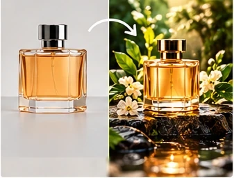
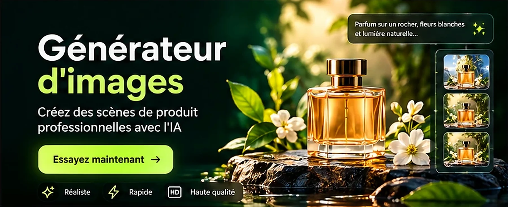
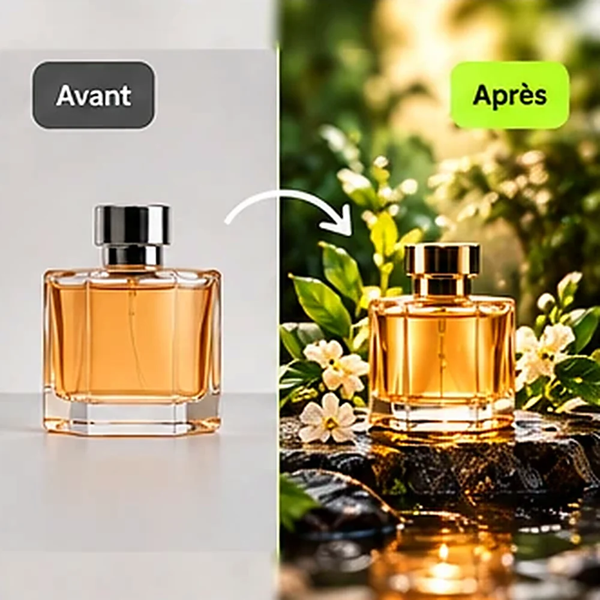
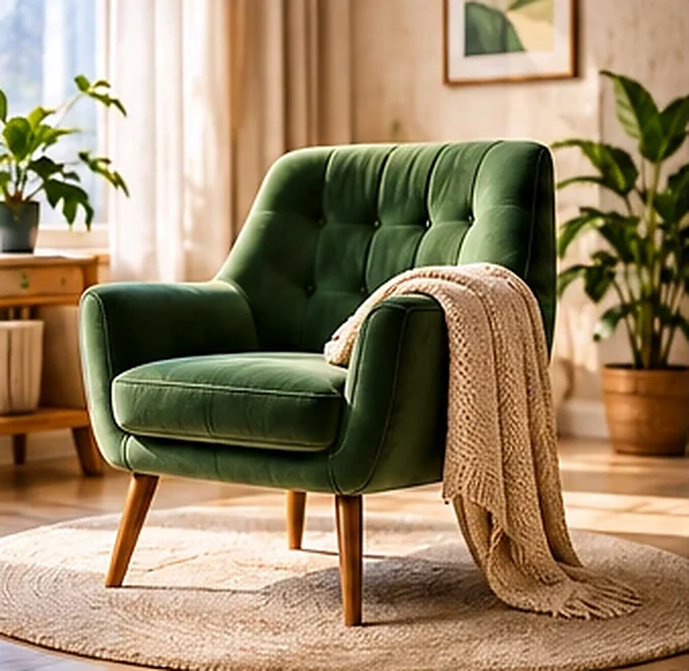
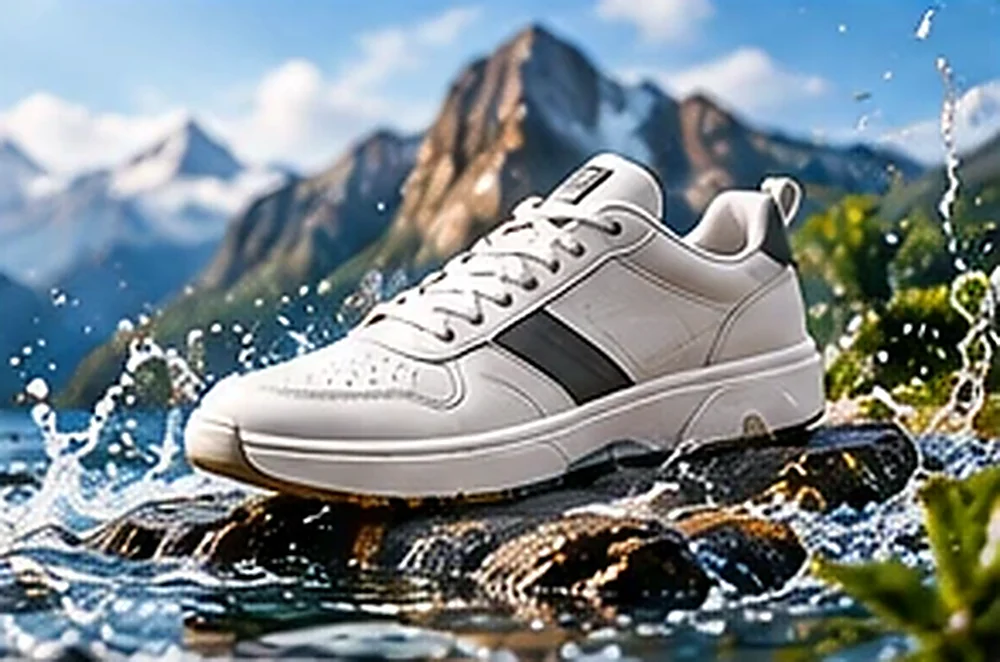
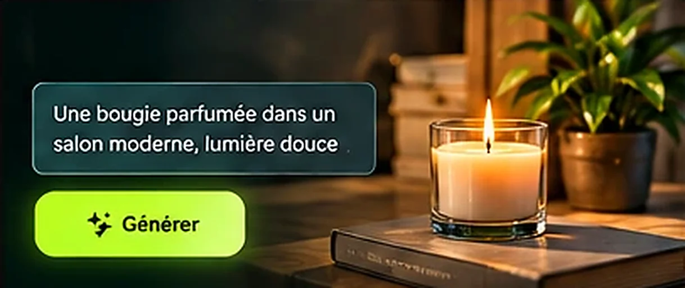
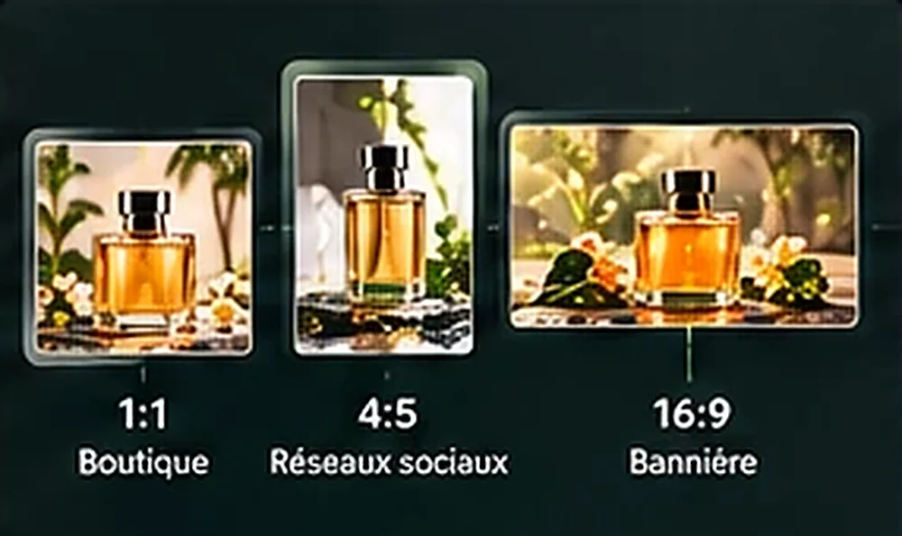
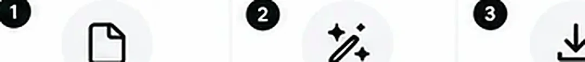
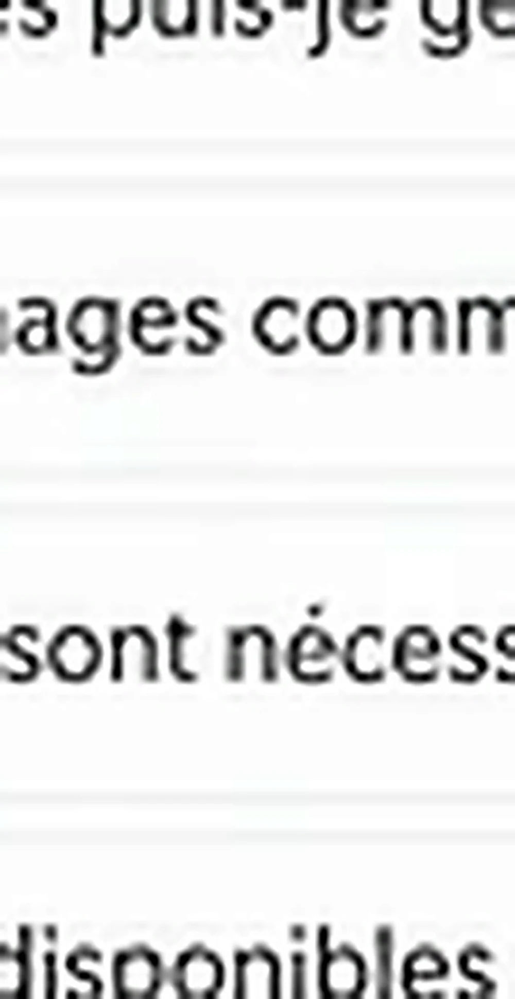

اكتب ما تريد أو اختر نوع المنتج، وولّد صورة منتج أو صورة إشهارية بمقاس فيسبوك وإنستغرام وتيك توك ويوتيوب وإعلانات غوغل. يمكنك إضافة نص قابل للتعديل لاحقاً داخل المحرّر.

صور توضيحية لأنواع المشاهد التي تناسب كل منتج.








اطلب أكثر من أسلوب لمنتجك نفسه وقارن بينها، ثم افتح الأنسب في المحرّر لتضيف النص والشعار أو احفظه في مكتبتك.
من الصورة إلى النتيجة في دقائق.
اختر النوع والمنتج والمقاس، أو اكتب وصف المشهد.
توافق على الاستهلاك ثم تظهر النتيجة.
في مكتبتك أو مفتوحة في المحرّر لإضافة نص وعناصر.
اختر المقاس المناسب لمكان النشر أو أدخل مقاساً مخصصاً.
أداة PRO
إجابات سريعة عن أكثر ما يُسأل.
تحتاج مفتاح PRO، وتؤكّد الاستهلاك قبل كل تنفيذ.
الصور المولَّدة لحسابك، وأنت مسؤول عن مراجعتها قبل نشرها والتأكد من مطابقتها لمنتجك.
تُرسل صورة منتجك مرجعاً مع تعليمات بالحفاظ عليه، وتتفاوت الدقة بحسب الصورة، فراجع الناتج دائماً.
نعم، النص اختياري ويمكن أن يُضاف طبقات قابلة للتعديل في المحرّر بدل أن يُرسم داخل الصورة.
صف الموضوع بوضوح، ثم المكان أو الخلفية، ثم الإضاءة والأسلوب (مثلاً: عبوة كريم على سطح رخامي، ضوء نافذة ناعم، تصوير تجاري). إن لم تعجبك النتيجة عدّل الوصف وأعد التوليد.
صور منتجات بمشاهد متنوعة، صور إشهارية بمقاسات المنصات، وخلفيات وعناصر بصرية تركّبها خلف صورك أو داخل موادك التسويقية. للشعارات استعمل «منشئ الشعارات».
لا، يمكن التوليد من وصف نصي فقط، أو من صورة منتجك ليبقى كما هو وتتغير البيئة حوله. التوليد من وصف نصي فقط يتطلب مفتاح الاتصال الأول للخدمة.
نعم: يصلك تنبيه تلقائي في لوحة التحكم (وإشعار المتصفح إن سمحت به) عندما يقترب رصيد PRO من النفاد، وتنبيه آخر عند نفاده. لا تُعرض لك أي أرقام استهلاك، وتتوقف الأدوات التي تستهلك الرصيد وحدها عند النفاد بينما تبقى بقية الأدوات تعمل.
اختر المنتج والمقاس ودع الأداة تقترح المشهد، وأنت تقرّر ما يُنشر.
أنشئ صورتك